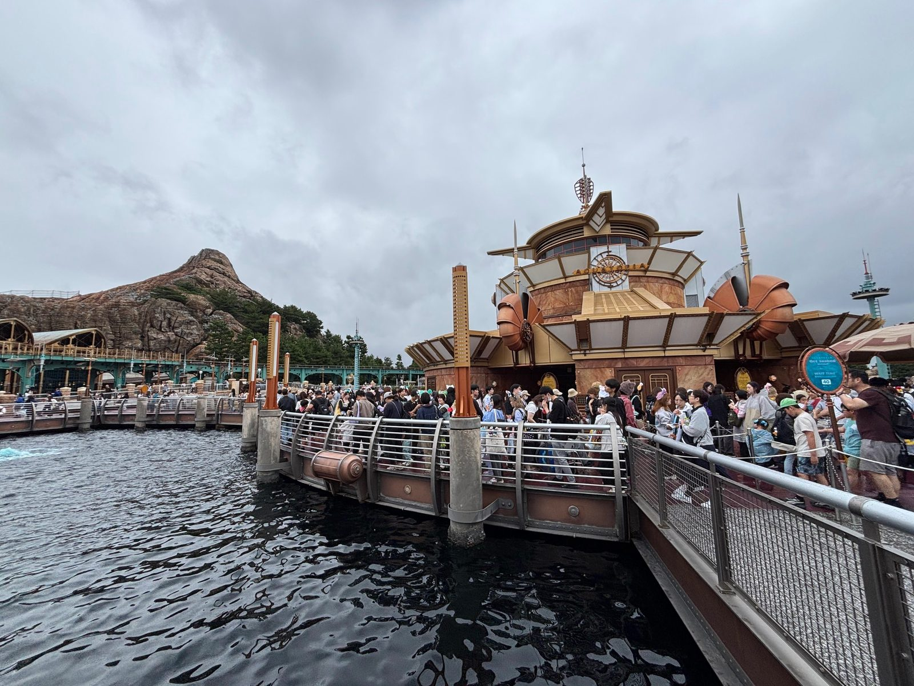
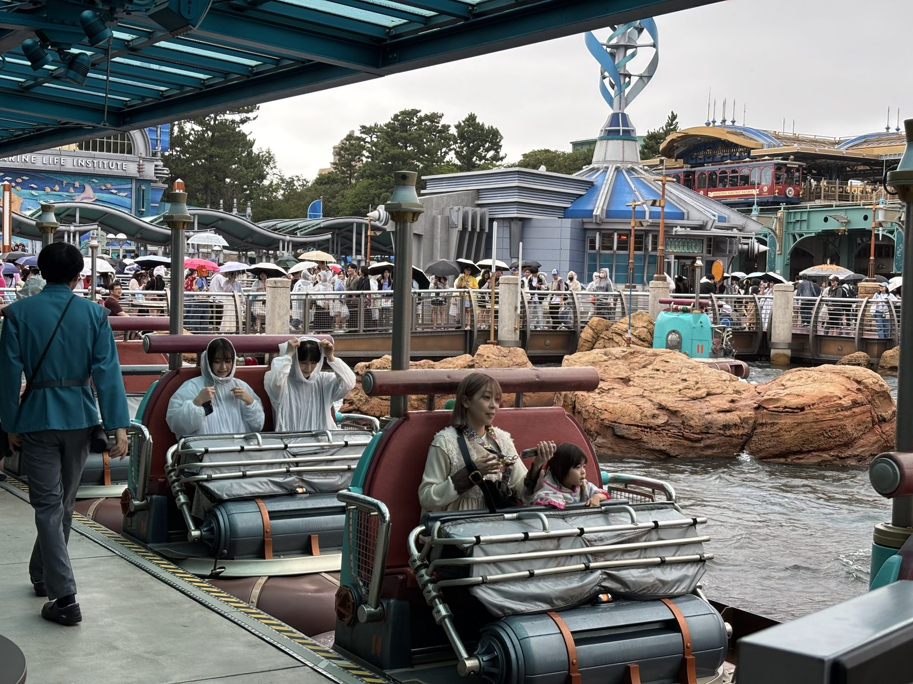
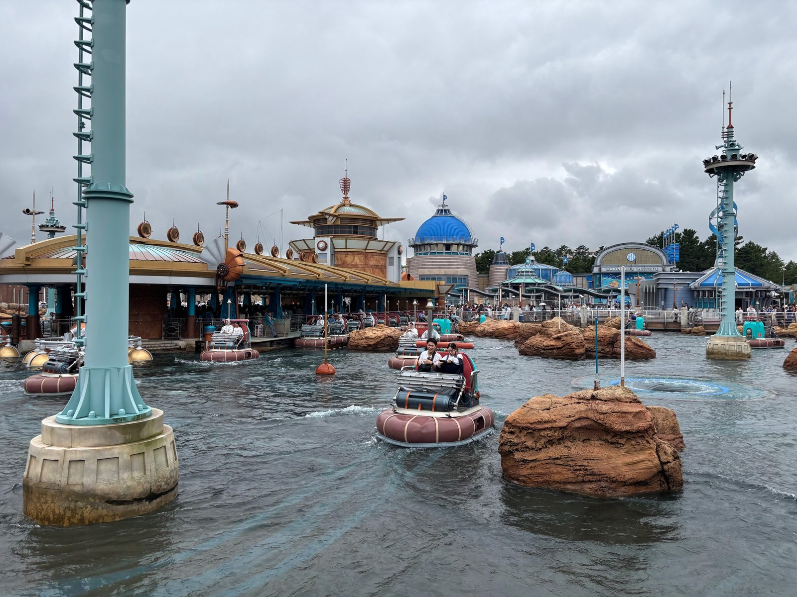
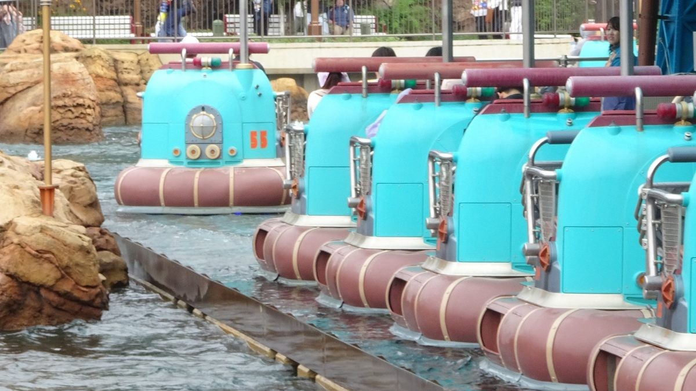
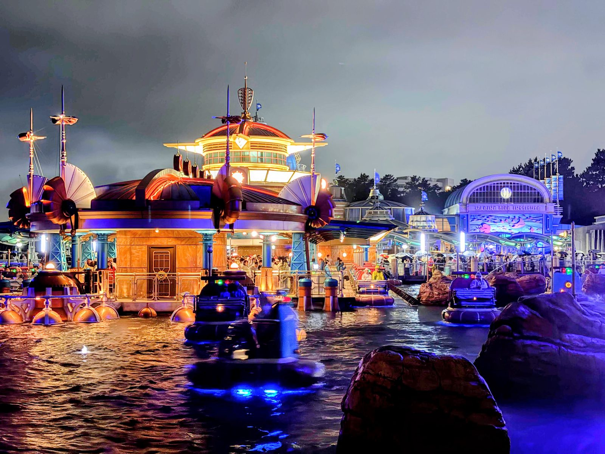

アクアトピアの乗り場。ドーム状の管制塔の向こうにプロメテウス火山が見える
「未来の港」と聞いて思い浮かぶのは、白く滑らかな近未来の風景かもしれません。しかし、ポートディスカバリーに広がるのは、流線型の建物や銅色・金色の金属、真鍮のランプ、貝殻を思わせる装置が織りなす、ひと味違う未来像です。そこには、20世紀初頭の人々が「科学の力で世界はもっと豊かになる」と信じて描いた未来——レトロフューチャーの世界が息づいています。
このエリアの源流としてよく語られるのが、1970年代にイマジニアのトニー・バクスターらが構想したとされる、カリフォルニアのディズニーランド向けの未完のプラン「ディスカバリー・ベイ」です。ジュール・ヴェルヌに代表される19世紀のSF的な想像力を土台にした港町で、実現こそしませんでしたが、その発想はパリのディスカバリーランドなど、のちのパークに受け継がれていったと言われています。ポートディスカバリーは、そこに「海」というテーマを強く打ち出して、水辺の研究港へと姿を変えた場所、と見ることもできます。
隣のミステリアスアイランドが19世紀末のスチームパンクを思わせるのに対し、ポートディスカバリーには20世紀前半から中盤の工業デザインと、科学への明るい信頼が表れています。同じ「科学の物語」でありながら、時代の空気は大きく異なります。こうした時代設定の違いが、パークを歩くうちに時間を越えたような感覚を生み出しているのです。
ポートディスカバリー全体の物語を押さえたうえで、2026年9月14日に営業を終了した「アクアトピア」を中心に、乗り場の意匠や、無軌道で走る仕組みまでを辿ります。技術的な部分は詳しい仕組みが明かされているわけではないため、特許資料や解説記事に残された手がかりと、ファンの間での読み解きを交えながら辿ります。
2001年の開園当初、ポートディスカバリーの物語の中心にいたのが「気象コントロールセンター（CWC）」でした。嵐を観測し、コントロールするための研究機関で、その成果として生まれたのが気象観測飛翔体「ストームライダー」です。ゲストは、巨大な嵐の中へ飛び込むストームライダーの試験飛行に招かれた人々、という立場でした。
海辺の港町にとって、嵐は避けられない脅威です。その嵐を科学の力で鎮めてしまおうという発想は、まさに「科学は人類の味方」と信じられていた時代のもの。ポートディスカバリーの建物や設備に漂う、少し誇らしげで、どこか楽観的な空気は、この「嵐をも乗り越える」という物語の土台から生まれていたと言えます。
ストームライダーは2016年に営業を終えましたが、エリアの物語そのものが消えたわけではありません。その続きは、第VI章で触れる海洋生物研究所へと、そっと引き継がれていきます。
ストームライダーが「外の嵐」へ飛び出していくアトラクションだったのに対して、同じエリアにあったアクアトピアは、研究施設の「内側」をのぞかせてくれるアトラクションでした。2001年9月4日の開園から、およそ25年。水面にヴィークルが行き交う景色は、ポートディスカバリーを象徴する風景のひとつでした。
設定として語られているのは、こうです。ポートディスカバリーの科学者たちが開発している、自律航行する小型のウォーター・ヴィークル。その実験を行うための施設がアクアトピアで、ゲストは完成を祝うフェスティバルに招待され、ふだんは立ち入れない研究施設でテスト走行に参加している――。つまり私たちは、ただの乗客ではなく、実験に立ち会う特別な参加者という役割を与えられていたわけです。
実験プールには、岩、滝、渦潮などの障害物が配置されています。ヴィークルがそれらに近づくと、急に向きを変えたり、後ろへ下がったりする。あの予測できない動きは、「ヴィークルに積まれた自動ナビゲーションシステムが、障害物を検知して回避している様子」を見せているのだと読むことができます。思わず身構えてしまうあの瞬間こそ、研究者にとっての「テスト項目」だった、という見方です。

乗り場の様子。背後には海洋生物研究所の建物と、ディズニーシー・エレクトリックレールウェイが見える
乗り場に目を向けると、座席は金属パイプのフレームに囲まれたベンチ型で、灰色のシートカバーとオレンジ色のベルトが取り付けられています。キャストの青緑色の制服も、研究所の職員が着ているような雰囲気です。背景には「MARINE LIFE INSTITUTE」の文字が見え、一枚の写真の中に、アクアトピアの実験施設としての世界と、のちに加わった海洋生物研究所の世界が同居しているのがわかります。
アクアトピアの魅力は、乗っている間だけにとどまりません。プールのまわりに置かれた設備のひとつひとつが、「ここは本当に動いている研究施設なのだ」と感じさせる小道具になっています。みなさんは、あの水面に立つ細いポールや、乗り場の上の塔を、じっくり眺めたことはありますか？ 写真を手がかりに、BGSの読みどころを拾ってみます。

実験プール。右奥の水面には渦潮が見える
円形のドームの上には、コンパスをかたどったエンブレムと「AQUATOPIA」の文字、そして細い尖塔とアンテナが立っています。プールの中を動き回るヴィークルの位置を把握し、走行を管制している塔、と受け取るのが自然な造形です。「見張り台」ではなく「司令塔」の雰囲気があるところが、研究施設らしさを出しています。
はしごが取り付けられた太い柱や、先端にホーン型のスピーカーを並べた塔が、水の中に立っています。観測や通信のための設備のようにも見え、実験が行われる現場に作業員が上がっていくための動線を感じさせます。
細いポールとオレンジ色のブイは、実験コースの目印のよう。そして岩の間に現れる渦潮は、障害物のひとつとして用意された「テスト用の仕掛け」と考えると、動きの理由がすっと腑に落ちます。夜の写真では、左手に金色のドーム状の装置が水面に連なって光っています。ファンの間では、水を整える設備のようなものと読み解かれることもあります。

乗り場に並ぶヴィークル。遠くの一台には「55」の番号と丸窓のランプが見える
ターコイズ色の車体に、浮き輪のようなえんじ色の船体。前面には丸窓風のランプがあり、車体には番号が振られています（写真の一台は55番）。背もたれの上には、赤と緑のランプが付いた棒が通っています。赤と緑は、船の進行方向を示す航行灯と同じ配色で、「これは乗り物であると同時に、研究用の試作機でもある」という二重の意味づけを思わせます。
ファンの間では、こうした設備に気象制御や海洋研究の機材を重ねて読む解釈もあります。同じ設備が、見る人によって「研究室の備品」にも「観測機器」にも見えてくる。用途をひとつに限定しない意匠が、この港の未来像に奥行きを与えています。
ここで少しだけ、技術の話をさせてください。アクアトピアが「レールもなく自由に走っているように見える」のは、「プーさんのハニーハント」などで知られるトラックレス・ライドの考え方を、水の上に持ち込んだものだと言われています。
位置制御では、プールの底に設けられた目印を読み取り、車輪の回転数や向きからヴィークルの移動量を推定します。この方式では、走行に伴って蓄積する位置の誤差を、目印を通過するたびに補正します。中央の制御システムは各ヴィークルの位置を把握し、車両同士が接近しすぎないよう走行を制御します。こうした無軌道ライドの位置制御に関する技術は、特許 US6377888B1 にも記されています。
アクアトピアのヴィークルは、水に浮かぶ船ではなく、ごく浅いプールの底を車輪で走ります。水深は数センチ程度とされ、ポンプが水流や波、泡、渦を生み出しています。水面が絶えず揺れ動くため底は見えにくく、光の反射も加わって、実際より深く感じられます。ヴィークルが水面を漂うように見えるのは、こうした水の動きと光の演出が重なっているためです。
水深を浅く保つことは、景観の演出だけでなく、安全面にも関わっています。万が一ゲストが転落しても深い水に沈み込まず、緊急時にはキャストが防水の長靴を履いてプールに入り、ゲストの降車を手助けします。水上を走るライドならではの安全対策です。
もうひとつ面白いのは、「なぜアクアトピアはあの動きだったのか」という点です。ハニーハントのように屋内で音楽やシーンに合わせて動きを作り込むのに比べ、アクアトピアは屋外。雨、日差し、水の抵抗、タイヤの滑りなど、変わり続ける環境の中で、乗り物同士の動きを細かく同期させるのは簡単ではありません。そのためアクアトピアでは、動きをぴったり揃えるのではなく、予測できない巡航そのものを楽しむというキネティック・アートのような設計に落ち着いた、という見方があります。
その後のトラックレス・ライドは、屋内の大型ライドで、より高度な同期を実現する方向へ進みました。「美女と野獣“魔法のものがたり”」では、多くの乗り物が音楽に合わせて一斉に舞うような動きを見せます。同じ系譜の技術が、屋外ではあえて「ゆらぎ」を楽しみ、屋内では「ぴったり揃える」という形に枝分かれした。そう考えると、アクアトピアの動きにも、技術の歴史が静かに刻まれていたのだと感じられます。
| 項目 | プーさんのハニーハント | アクアトピア | 美女と野獣“魔法のものがたり” |
|---|---|---|---|
| 開業 | 2000年・東京ディズニーランド | 2001年・東京ディズニーシー | 2020年・東京ディズニーランド |
| 環境 | 屋内の暗室 | 屋外の浅いプール | 屋内の大型暗室 |
| 動きの特徴 | 場面ごとの演出に合わせたライドの動き | 障害物を避けながらのランダムな巡航 | 音楽に合わせた群舞のような動き |
| 制御の難しさ | 演出との同期 | 雨・日差し・水の影響 | 多数の乗り物の同調 |
2016年5月にストームライダーが営業を終えたあと、2017年5月にオープンしたのが「ニモ＆フレンズ・シーライダー」です。ピクサー映画『ファインディング・ドリー』の世界観を取り入れたこのアトラクションとともに、ポートディスカバリーの物語も更新されました。
新たな設定は、CWCの研究成果に加えて、海洋生物研究所（Marine Life Institute／MLI）がポートディスカバリーに分所を設立した、というもの。電気を通すと魚のサイズまで小さくなる特殊な金属を使った潜水艇「シーライダー」で、海の生き物を観察する研究が始まった――という筋書きです。
テーマの軸は「天候のコントロール」から「海の生き物との調和と観察」へと移りました。一方で、「最先端の科学技術を展示し、実際に乗って確かめる研究港」というポートディスカバリーの骨格は変わっていません。アクアトピアは、その移り変わりの間も実験プールとして水面を走り続けてきました。乗り場から見える景色にMLIの建物が加わった後も、物語の中では「同じ研究所の一角」として自然に並んでいます。
ここで、ちょっとした豆知識をひとつ。みなさんは、アメリカンウォーターフロントのニューヨーク側にある、ディズニーシー・エレクトリックレールウェイの駅で、ポートディスカバリーを象徴するポスターを目にしたことはありますか？
エレクトリックレールウェイは、アメリカンウォーターフロントとポートディスカバリーを結ぶ路線です。ニューヨークの駅に、遠くにある「未来の港」を宣伝するようなポスターが貼られている――。そう考えると、あの駅の風景は、単なる背景ではなくなってきます。ニューヨークの人々が電車を待ちながら、「次の休日は、科学の最先端が集まる港へ出かけてみようか」と話している。そんな声が聞こえてきそうな、さりげない演出です。
パークの別々のエリアが、「同じ世界の中の別の場所」としてつながっている。ポートディスカバリーの物語は、エリアの中だけでなく、移動する電車の駅にもそっと顔を出しているのです。現地で駅に立ち寄ったときは、ぜひ探してみてください。
2026年9月14日、アクアトピアは再開発計画の一環として営業を終了しました。2001年9月4日のオープンから、およそ25年。水面を走るヴィークルは、パークの風景から姿を消しました。
| 年月 | 出来事 |
|---|---|
| 2001年9月 | 東京ディズニーシー開園。ストームライダーとアクアトピアが、ポートディスカバリーの二つの柱として営業を開始 |
| 2016年5月 | ストームライダーが営業を終了 |
| 2017年5月 | ニモ＆フレンズ・シーライダーがオープン。海洋生物研究所の設定が加わる |
| 2026年9月14日 | アクアトピアが再開発計画の一環として営業を終了 |
パークの外側から見れば、これは再開発のための閉幕です。ただ、BGSの世界の中で読むとしたら、BGS Chroniclesではこんなふうに受け止めたいと思います。完成記念のフェスティバルで繰り返されたテスト走行を経て、ヴィークルの自律航行システムは、障害物だらけの実験プールで十分な成果を出した。実験施設としての役割を、無事に終えたのだ、と。
再開発の背景について、ファンの間では、悪天候でも運営できる大きな屋内施設へのニーズや、一度に体験できるゲストの数など、パーク全体の運営面から見た理由が語られることもあります。いずれにしても、広い水面があった場所に、次の物語が生まれていくことは確かです。これからポートディスカバリーがどのように姿を変えていくのか、続報を見守りたいと思います。

夜のアクアトピア。ヴィークルの足元が青く光り、管制塔がオレンジ色に浮かび上がる
夜になると、アクアトピアはまったく別の顔を見せました。管制塔のドームは金色に染まり、銅色の装置が影を伸ばし、ヴィークルの足元は青い光で縁取られる。水面にはその色が揺れて映り込む。昼の「実験プール」が、夜には「祝祭の会場」に変わるようでした。
レールを持たない乗り物は、決められた道をたどるのではなく、その場の状況を読みながら進みます。アクアトピアが積み重ねた25年は、そうした技術の進化と、ポートディスカバリーという物語の移り変わりを、水の上でそっと見届けた時間でもありました。その知見は、のちのトラックレス・ライドにも受け継がれていると言われています。
管制塔の灯りも、水面の波も、渦潮も、今は現地で見ることができません。しかし、この港が夢見た「科学が人を楽しませる未来」は、姿を変えながらも、この場所の風景に記憶として重なっています。
最終編集日：